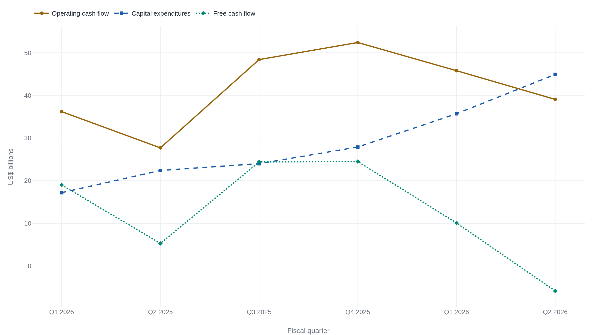

Alphabet's free cash flow turns negative for the first time
Capital spending of $44.9 billion outpaced the $39.1 billion Alphabet's business generated in cash in the quarter that ended June 30, 2026, even as a $98.0 billion pre-tax investment gain pushed net income to a record $112 billion.
Alphabet's cash statement disagrees with its profit line
Alphabet spent $44.9 billion in the quarter that ended June 30, 2026 on the servers, data centers, and networking equipment that run its AI systems.1 The business generated $39.1 billion in cash over the same three months, so free cash flow for the quarter was -$5.9 billion, the first negative quarter Alphabet's public filings show.23 Negative free cash flow is not the same as losing money. It means Alphabet spent more cash than its business generated once capital investment is counted, not that the underlying business lost money this quarter.4
The income statement alone shows a record quarter. The cash-flow statement shows a company that spent more cash than it took in. Both statements are audited. Both are true. They answer two different questions: what the business earned on paper this quarter, and what it actually generated in cash.
What capex spends now that earnings recognize later
Free cash flow starts from a subtraction: cash generated by operating the business, minus cash spent on property and equipment, better known as capital expenditure, or capex. The subtraction matters because of a timing mismatch built into accrual accounting, and this quarter's spending is a clean illustration of it.
Of the $44.9 billion Alphabet spent on infrastructure this quarter, about 60% went to servers, the GPUs and Alphabet's own custom chips that run AI workloads, and about 40% went to data centers and networking equipment.2 Buying a server is a cash transaction like any other. The money leaves the bank the day the purchase settles, all of it, in the quarter it happens.1 The income statement does not book that spending as an expense at all. It books depreciation instead: a fraction of the purchase price, recognized in each of the years the equipment is expected to keep working, matched against the revenue that equipment helps produce over its life. A dollar spent on a server this quarter shows up as a full dollar of cash leaving the business now, and as a much smaller fraction of a dollar in net income now, with the rest spread across quarters still to come.
The mismatch runs one direction. It always shows the cash number moving before the earnings number does. A company ramping capital spending shows cash flow deteriorating well ahead of any dent in reported earnings, because the expense that would offset the new spending has not been recognized yet. Net income cannot, on its own, say whether a spending increase like Alphabet's is sustainable: it will not register the strain for years, if it registers it at all. Free cash flow registers it the same quarter the money leaves.
A record built on a gain, not a quarter
Net income for the quarter was about $112 billion, comfortably Alphabet's best quarter on that measure.2 Running Search, YouTube, Cloud, and its other operating businesses, Alphabet earned $40.8 billion in operating income, itself a strong number.1 The rest of the record came from other income: primarily a $98.0 billion pre-tax gain on Alphabet's equity investments, recognized the same quarter operating cash could not keep pace with capital spending.1
Accounting rules require marking certain equity holdings to their current market value each quarter and running the change through income, whether or not any of that value converts to cash. A holding can rise $98.0 billion in reported value without a dollar of it reaching Alphabet's bank account and without Alphabet selling a single share. Free cash flow does not carry this problem, because it counts only cash that actually moved: the $39.1 billion of operating cash flow and the $44.9 billion of capital expenditure both have a bank statement behind them.1 The $98.0 billion gain, so far, does not. It is also measured before tax, while the $112 billion net income figure is measured after tax, so the two do not simply add and subtract against each other. What the operating income figure alone makes clear is that the gain, not the underlying business, is what pushed the quarter to a record.1
The $112 billion figure is real, and so is the gain behind it. A record quarter by net income and a negative quarter by free cash flow are not two accounts of the same event fighting for the truth. They are two different measurements, and only one of them, free cash flow, was built to answer whether the business generated more cash than it spent.
Six quarters, one crossover
The Q2 shortfall did not appear from nowhere. Capital expenditure climbed in every one of the last six quarters, while operating cash flow moved up and down within a narrower band, and the two lines finally crossed in Q2 2026.
In Q1 2025, Alphabet spent $17.2 billion on infrastructure against $36.2 billion in operating cash flow, a comfortable $19.0 billion of free cash flow.5 A year later, in Q1 2026, capital expenditure had roughly doubled to $35.7 billion, operating cash flow had fallen to $45.8 billion, and free cash flow had shrunk to $10.1 billion.5 Three months after that, in Q2 2026, capital expenditure rose again to $44.9 billion while operating cash flow fell to $39.1 billion, and free cash flow went negative.1

Capital expenditure rose from $17.2 billion to $44.9 billion across those six quarters, roughly a 2.6x increase. Operating cash flow ended the period almost unchanged. It started at $36.2 billion, peaked at $52.4 billion in Q4 2025, and finished at $39.1 billion.8 That steady climb, against an operating cash flow line that moved up and down within about a $25 billion band, is what produced the crossover: capital expenditure did not have to spike to pass cash flow. It only had to keep climbing long enough for an ordinary quarter of operating cash flow to fall below it.
Alphabet's own guidance says the climb continues. Management raised full-year 2026 capital-expenditure guidance to $195 billion to $205 billion at the Q2 print, up from the $175 billion to $185 billion range set at the end of 2025, and said 2027 capital expenditure will increase significantly again.28
What would tell a bet from a warning
The stock market's first reaction leaned toward the warning-sign reading. Alphabet shares fell after the print, as investors weighed the capital-expenditure guidance raise against the rest of the quarter's results.9 A single negative free-cash-flow quarter does not, on its own, distinguish a business buying capacity it will need from a business spending past what its growth can support. Two more facts from Alphabet's own quarter narrow the question.
First, Alphabet is not funding this quarter's shortfall by drawing down its cash reserve. Over the first half of 2026, the six months that include this quarter, Alphabet issued $30.5 billion in new stock and $56.2 billion in new debt, and repurchased none of its own stock, a break from a buyback program it has run for years.2 It ended the quarter holding about $240 billion in cash and marketable securities.23 That financing, roughly $86.7 billion raised over six months, is too large to be explained by one quarter's $5.9 billion cash shortfall. It reads as capital raised ahead of the spending program Alphabet has already guided to, $195 billion to $205 billion for the full year and more in 2027, not as a patch for this quarter alone.2
| Item | Amount | What it means |
|---|---|---|
| Equity issued | $30.5B | New stock sold over the first half of 2026, not this quarter alone. |
| Debt issued | $56.2B | New debt issued over the same six months, leading the financing mix. |
| Stock repurchased | $0 | None bought back this half, a break from Alphabet's usual buyback pattern. |
| Cash & securities | ~$240B | Held at quarter end, roughly forty times the size of the negative free cash flow. |
| TTM free cash flow | $53.3B | Trailing twelve months, still solidly positive despite the negative quarter. |
Second, trailing-twelve-month free cash flow, the same measure taken over the last four quarters instead of one, was still positive: $53.3 billion.23 The single negative quarter is a real number, not a rounding error, but it sits inside a business that generated more than $50 billion of free cash over the year around it. Revenue for the quarter was $119.8 billion, up 24% year over year, cloud revenue growing fastest within it, and operating margin held at 34%.1210 Whatever pressure the capital spending is putting on the balance sheet, it has not yet shown up as pressure on the business generating the cash.
None of this settles whether $195 billion to $205 billion is the right amount to spend, or whether Alphabet is buying capacity it will fill or capacity a competitor forced it to match. Either operating cash flow starts climbing again as the infrastructure bought this quarter starts producing revenue, or capital expenditure keeps climbing while operating cash flow stays flat. The second pattern, repeated, is what would turn one quarter into a warning. Alphabet has already committed itself to another year of the same trade.2 The next several quarters of its cash-flow statement, not this one, are what will answer it.
Sources
- U.S. SEC / Alphabet Inc. · Form 10-Q for the quarter ended 2026-06-30
- Alphabet Inc. · Q2 2026 earnings release
- FourWeekMBA · "Alphabet's Q2 2026 Free Cash Flow Turned Negative as AI Capital Expenditure Doubled to $44.9 Billion"
- Search Engine Journal · "Alphabet Q2 Earnings Show $5.85 Billion Negative Free Cash Flow"
- U.S. SEC / Alphabet Inc. · Form 10-Q for the quarter ended 2026-03-31
- Alphabet Inc. via U.S. SEC · Q2 2025 earnings release
- Alphabet Inc. via U.S. SEC · Q3 2025 earnings release
- Alphabet Inc. via U.S. SEC · Q4 2025 earnings release
- CNBC · "Alphabet earnings takeaways: Q2 revenue beats, GOOGL stock sinks on 2026 capex hike"
- Seeking Alpha · "Alphabet delivers Q2 beat with cloud revenue surging, 82% capex disappoints"